AtlasMap is a data mapping solution with an interactive web based user interface. It simplifies configuration of an integration that handles different types of data including:
-
XML schema or instance files
-
JSON schema or instance files
-
Java class files
To use AtlasMap, you import your data shape definition files, map source fields to target fields, optionally apply transformations or conditions, and then execute defined mappings by means of the AtlasMap runtime engine. AtlasMap provides standard transformations and supports the creation of custom, user-defined transformations.
AtlasMap is available:
-
As a standalone application
-
Embedded in Syndesis, which is an open-source integration platform
There is also a camel-atlasmap component that consumes an
AtlasMap mapping definition and processes data mappings as a part of a Camel route.
This user guide is organized as follows:
1. Quickly get started using AtlasMap standalone
To run AtlasMap standalone:
-
Obtain the most recent AtlasMap version number:
-
Scroll down to see the
maven centralicon with the latest version, for example: .
.
-
Download the AtlasMap standalone
.jarfile by invoking thewgetcommand with the following format. Replace$1.43.0-SNAPSHOTwith an actual version number.wget http://central.maven.org/maven2/io/atlasmap/atlasmap-standalone/${VERSION}/atlasmap-standalone-${VERSION}.jar -
Run AtlasMap standalone by invoking the
javacommand with the following format:$ java -jar atlasmap-standalone-${VERSION}.jarFor example:
$ java -jar atlasmap-standalone-1.42.3.jar
Although it is not a common situation, you can start AtlasMap and also load mapping definitions if you have an AtlasMap
.admfile. An AtlasMap.admfile contains mapping definitions that were exported from AtlasMap. For example, suppose you want to start AtlasMap and import the/home/aslan/Downloads/atlas-mapping.admfile. Invoke a command such as the following:$ java -Datlasmap.adm.path=/home/aslan/Downloads/atlas-mapping.adm -jar atlasmap-standalone-1.42.3.jar
-
In a browser, visit http://127.0.0.1:8585/ to see the AtlasMap data mapper canvas.
-
Experiment with the data mapper:
-
At the top of the Source panel, click
 to import a JSON or XML file that you can map fields from.
to import a JSON or XML file that you can map fields from. -
At the top of the Target panel, click
to import a different JSON or XML file that you can map fields to. -
To map fields, click a source field and then click the target field that you want to map it to.
-
With a data mapping selected, explore the optional transformations.
-
To preview a data mapping result, click
 and select Show Mapping Preview. Enter sample data in source input fields.
and select Show Mapping Preview. Enter sample data in source input fields. -
To save your work, click in the menu bar. This creates an AtlasMap
.admfile in theDownloadsdirectory. This file contains the mapping definitions.
-
2. Overview of AtlasMap
The following topics provide a high-level overview of AtlasMap:
2.1. General procedure for using AtlasMap standalone
To use AtlasMap standalone, the main steps are:
-
Download the AtlasMap standalone
.jarfile. -
Start running AtlasMap standalone.
-
In the AtlasMap data mapping canvas:
-
Import a source data file.
-
Import a target data file.
-
Map fields as needed, optionally applying transformations and/or conditions.
-
Export the defined mappings to a
.admAtlasMap catalog file.
-
What can you do with an AtlasMap .adm file?
-
Continue working on the mappings by importing the
.admfile into AtlasMap. -
Execute the mappings in a Camel application that uses the
camel-atlasmapcomponent, which consumes.admfiles.
2.2. About AtlasMap and Syndesis
The Syndesis open-source integration platform embeds AtlasMap. In a Syndesis integration, you add connections to applications that provide the data of interest to you. With connections in place, Syndesis offers an AtlasMap data mapper step. When you add a data mapper step, Syndesis displays the data mapper canvas with:
-
Source data fields that are provided by previous connections
-
Target data fields that are required by the subsequent connection
In other words, you do not import source and target data as you would in standalone AtlasMap. Likewise, when data mappings are complete, instead of exporting the mappings, you just click a button to indicate that you are done.
When Syndesis embeds AtlasMap, it does not display the icons for importing and exporting data.
2.3. About types of fields in AtlasMap
The AtlasMap user interface displays source fields and target fields and you define the field-to-field mappings that you need.
| At this time, AtlasMap does not provide whole document mapping. It is expected that a future release will support bulk mapping by detecting the same object structure in source and target files (issue #86). |
An understanding of the different kinds of AtlasMap fields makes it easier for you to define the mappings you need. For the purposes of mapping, there are three field types:
-
Terminal — A terminal field is selectable. It can be the source or target in a mapping. During execution, a path to a terminal field identifies a value.
-
Parent — A parent field is also referred to as a complex field. A parent field is expandable. Expanding a parent field displays its descendant fields. A parent field it not selectable and cannot be directly in a mapping.
-
Collection — A collection field is also a terminal field. It is selectable and can be the source or target in a mapping. A collection field indicates a field that holds one or more objects that are all the same type. Internally, a collection field might be an array.
For example, consider this sample XML instance document:
<order>
<orderId value="O123"/>
<items>
<item>
<itemId>Orange</itemId>
<quantity value="1"/>
</item>
<item>
<itemId>Apple</itemId>
<quantity value="2"/>
</item>
</items>
</order>Terminal fields: |
|
Parent fields: |
|
Collection fields: |
|
When you define a mapping that uses this XML instance document as the source data, you cannot know how many items will be in an order. However, the same mapping definition works for each transaction, regardless of the number of items in the order.
2.4. About types of mappings in AtlasMap
AtlasMap supports the following general types of mappings:
-
One to one — Map one source field to one target field.
-
Many to one — Map multiple source fields to to one target field. You specify the delimiter character that AtlasMap inserts in the target field between the mapped source fields. The default delimiter is a space.
-
One to many — Map one source field to multiple target fields. You specify the delimiter character that is in the source field. AtlasMap maps each delimited value to a the target field you select.
-
For each — Iteratively map one source collection field to one target collection field.
2.5. About transforming a field in AtlasMap
In a data mapping, you can apply a transformation to one or more fields.
A transformation is a function that AtlasMap performs on the selected
field. For example, suppose you select a source field and specify
the Uppercase transformation. At runtime, AtlasMap converts the source
field value to uppercase and inserts the uppercase value in the target field.
To apply a transformation, select a source or target terminal field, click Add Transformation in the Mapping Details panel on the right, and select the transformation.
You can apply different transformations to different fields in the same mapping.
In a one-to-one mapping, which maps one source field to one target field, it does not matter whether you apply the transformation to the source field or the target field. In a one-to-many or many-to-one mapping, consider what the target field value needs to be when you specify a transformation. For example, consider a many-to-one mapping that combines source fields for number, street, city, and state into one target address field. If you want the strings in the target address field to all be uppercase, select the target address field and apply the uppercase transformation. If only the state needs to be uppercase, select the source state field, and apply the uppercase transformation.
You can think of a source field transformation as performing pre-processing, while a target field transformation performs post-processing.
2.6. Alternatives for supplying source values that are missing
When you are mapping fields, you might find that a source data shape does not provide a value that a target data shape requires. In these situations, AtlasMap provides two alternatives for specifying source values that you can map to target fields:
-
Define a property — In AtlasMap, at the top of the Source panel, to the right of Properties, click the + sign to display a dialog. Enter the property name, the property’s default value, and indicate the data type. Note that at runtime, if there is an environment variable or a Java system property with the same name as the property, it is possible for this default value to be overridden. Click Save to create a new terminal source field.
-
Define a constant — In AtlasMap, near the top of the Source panel, to the right of Constants, click the + sign to display a dialog. Enter the value of the constant, and indicate the data type. Click Save to create a new terminal source field.
For example, suppose that a target data shape defines a Layout field
whose value must be HORIZONTAL or VERTICAL. The source data shape does
not provide this field. You can create a constant. Specify HORIZONTAL
or VERTICAL as the value and accept String as the data type.
After you save the new constant, you can map it to the Layout target field.
2.7. Descriptions of AtlasMap icons
The following table describes some of the AtlasMap icons. When you are
familiar with the icons, you can hide mapping lines or data types
to create a less busy display. To toggle what AtlasMap displays, click
and select what you want to show or hide.
| Icon | Description |
|---|---|
|
Completely mapped field |
Partially mapped field |
|
Collection field |
|
Complex type that you can expand |
|
|
There is a transformation that is being applied to this field. |

3. Importing data files into AtlasMap
Data mapping allows you to match fields in a source data shape to fields in a target data shape. The data shapes that AtlasMap can operate on are defined in JSON schema or instance documents, XML schema or instance documents, or Java classes.
To map fields, you import data shape definition files into the AtlasMap Source and Target panels. You can import multiple files into each panel. For example, suppose you import three source files and one target file. You can map fields from all three source files to the single target file.
The following topics provide examples of importing different data shape definitions:
3.1. Importing JSON files into AtlasMap
You can import a JSON schema file or a JSON instance file into
AtlasMap. The procedure for importing each kind of file is the same.
For example, the following JSON schema file, JSONSchema.json,
defines properties for an Order object:
{
"$schema": "http://json-schema.org/schema#",
"description": "Order",
"type": "object",
"properties": {
"order": {
"type": "object",
"properties": {
"address": {
"type": "object",
"properties": {
"street": { "type": "string" },
"city": { "type": "string" },
"state": { "type": "string" },
"zip": { "type": "string" }
}
},
"contact": {
"type": "object",
"properties": {
"firstName": { "type": "string" },
"lastName": { "type": "string" },
"phone": { "type": "string" }
}
},
"orderId": { "type": "string" }
}
},
"primitives": {
"type": "object",
"properties": {
"stringPrimitive": { "type": "string" },
"booleanPrimitive": { "type": "boolean" },
"numberPrimitive": { "type": "number" }
}
},
"primitiveArrays": {
"type": "object",
"properties": {
"stringArray": {
"type": "array",
"items": { "type": "string" }
},
"booleanArray": {
"type": "array",
"items": { "type": "boolean" }
},
"numberArray": {
"type": "array",
"items": { "type": "number" }
}
}
},
"addressList": {
"type": "array",
"items": {
"type": "object",
"properties": {
"street": { "type": "string" },
"city": { "type": "string" },
"state": { "type": "string" },
"zip": { "type": "string" }
}
}
}
}
}To import this file into the AtlasMap Source panel:
-
At the top of the Source panel, click
. -
In the Open File dialog, navigate to the
JSONSchema.jsonfile and select it. -
Click Open.
AtlasMap displays the fields in the Source panel:
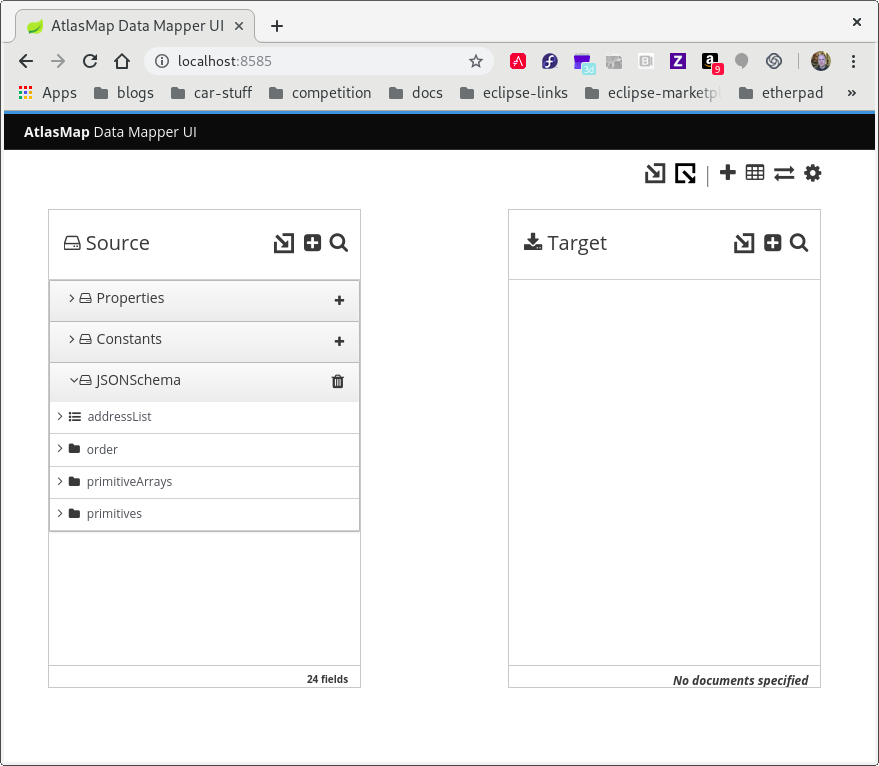.
3.2. Importing XML files into AtlasMap
You can import an XML schema file or an XML instance file into
AtlasMap. The procedure for importing each kind of file is the same.
For example,
the following XML schema file, XMLSchema.xml, defines a schema for
transactions related to pets:
<d:SchemaSet xmlns:d="http://atlasmap.io/xml/schemaset/v2" xmlns:xsd="http://www.w3.org/2001/XMLSchema">
<xsd:schema targetNamespace="http://syndesis.io/v1/swagger-connector-template/request" elementFormDefault="qualified">
<xsd:element name="request">
<xsd:complexType>
<xsd:sequence>
<xsd:element name="body">
<xsd:complexType>
<xsd:sequence>
<xsd:element ref="Pet" />
</xsd:sequence>
</xsd:complexType>
</xsd:element>
</xsd:sequence>
</xsd:complexType>
</xsd:element>
</xsd:schema>
<d:AdditionalSchemas>
<xsd:schema>
<xsd:element name="Pet">
<xsd:complexType>
<xsd:sequence>
<xsd:element name="id" type="xsd:decimal" />
<xsd:element name="Category">
<xsd:complexType>
<xsd:sequence>
<xsd:element name="id" type="xsd:decimal" />
<xsd:element name="name" type="xsd:string" />
</xsd:sequence>
</xsd:complexType>
</xsd:element>
<xsd:element name="name" type="xsd:string" />
<xsd:element name="photoUrl">
<xsd:complexType>
<xsd:sequence>
<xsd:element name="photoUrl" type="xsd:string" maxOccurs="unbounded" minOccurs="0" />
</xsd:sequence>
</xsd:complexType>
</xsd:element>
<xsd:element name="tag">
<xsd:complexType>
<xsd:sequence>
<xsd:element name="Tag" maxOccurs="unbounded" minOccurs="0">
<xsd:complexType>
<xsd:sequence>
<xsd:element name="id" type="xsd:decimal" />
<xsd:element name="name" type="xsd:string" />
</xsd:sequence>
</xsd:complexType>
</xsd:element>
</xsd:sequence>
</xsd:complexType>
</xsd:element>
<xsd:element name="status" type="xsd:string" />
</xsd:sequence>
</xsd:complexType>
</xsd:element>
</xsd:schema>
</d:AdditionalSchemas>
</d:SchemaSet>To import this file into the AtlasMap Target panel:
-
At the top of the Target panel, click
. -
In the Open File dialog, navigate to the
XMLSchema.xmlfile and select it. -
Click Open.
AtlasMap displays the fields in the Target panel. In the following image, the fields are expanded to show more detail.

3.3. Importing Java archive files into AtlasMap
AtlasMap can import a Java archive file and display mappable fields in either the source or target panel. In the data mapper, each class-wide public entity in a class file that is in the imported JAR file becomes a mappable field.
Arrays and data types are more discretely defined.
Consider the following two files:
Bicycle.java:
package io.paul;
import io.paul.GeoLocation;
public class Bicycle {
public int cadence;
public int gear;
public int speed;
public float[] seatHeight;
public String[] color;
public GeoLocation geoLocation;
}GeoLocation.java:
package io.paul;
public class GeoLocation {
double lattitude;
double longitude;
}To import these files:
-
Compile the Java files and assemble the results into a Java archive file. For example, invoke the following commands to create the
Bicycle.jarfile:javac -cp io.paul:. -d . GeoLocation.java Bicycle.java jar cvf ../Bicycle.jar *
-
In the main tool bar, click
. -
In the Open dialog, navigate to the
Bicycle.jarfile and click Open. -
At the top of the Source panel, click to import the fields into the source panel.
To display imported fields in the Target panel, you would click at the top of the Target panel.
-
In the Establish your class… dialog, in the Class package name field, enter the class package name of the Java class. For example, in
Bicycle.jarfile, the class package name isio.paul.Bicycle. -
Click OK. If you import the sample
Bicycle.jarfile into the the Source panel, you would now see something like the following. The fields that are in the imported Java class files appear in the panel into which they were imported.

4. Mapping fields in AtlasMap
The following topics provide details for mapping fields in AtlasMap:
4.1. Finding the data field that you want to map
In a relatively simple integration, mapping data fields is easy and intuitive. In more complex integrations or in integrations that handle large sets of data fields, mapping from source to target is easier when you have some background about how to use the data mapper.
The data mapper displays two columns of data fields:
-
Sources is a list of the data fields that you can map to target fields.
-
Target is a list of the data fields that you can map source fields to.
To quickly find the data field that you want to map, you can do any of the following:
-
Search for it.
The Sources panel and the Target panel each have a search field at the top. If the search field is not visible, click
 at the top
right of the Sources or Target panel.
at the top
right of the Sources or Target panel. -
Enter the names of the fields that you want to map.
To do this, in the upper right of the Configure Mapper page, click the plus sign to display the Mapping Details panel. In the Sources section, enter the name of the source field. In the Action section, accept the default Map, which maps one field to one other field. Or, select Combine or Separate. In the Target section, enter the name of the field that you want to map to.
-
Expand and collapse folders to limit the visible fields.
4.2. Mapping one source field to one target field
The default mapping behavior maps one source field to one target field.
For example, map the Name field to the CustomerName field.
-
In the Sources panel, click the data field that you want to map from.
You might need to expand a folder to see the data fields that it provides.
When there are many source fields, you can search for the field of interest by clicking the
and entering
the name of the data field in the search field. -
In the Target panel, click the data field that you want to map to.
The data mapper displays a line that connects the two fields that you just selected.
-
Optionally, preview the data mapping result. This is useful when you add a transformation to the mapping or when the mapping requires a type conversion.
-
In the upper right of the data mapper, click
and select
Show Mapping Preview to display a text input field on the source
field and a read-only result field on the target field. -
In the source field’s data input field, enter text. Click somewhere outside this text box to display the mapping result in the read-only field on the target field.
-
Optionally, to see the result of a transformation, add a transformation in the Mapping Details panel.
-
Hide the preview fields by clicking
again and selecting
Show Mapping Preview.
-
-
Optionally, to confirm that the mapping is defined, in the upper right, click
 to display the defined mappings.
to display the defined mappings.You can also preview data mapping results in this view. If preview fields are not visible, click EditorSettings.png[Editor settings] and select Show Mapping Preview. Enter data as described in the previous step. In the table of defined mappings, preview fields appear for only the selected mapping. To see preview fields for another mapping, select it.
Click
again to display the data field
panels. -
In the upper right, click Done to save the mapping.
Here is another way to map a single source field to a single target field:
-
In the Configure Mapper page, in the upper right, click the plus sign to display the Mapping Details panel.
-
In the Sources section, enter the name of the source field.
-
In the Action section, accept the default Map action.
-
In the Target section, enter the name of the field that you want to map to and click Enter.
4.3. Example of missing or unwanted data when combining or separating fields
In a data mapping, you might need to identify missing or unwanted data when a source or
target field contains compound data. For example, consider a
long_address field that has this format:
number street apartment city state zip zip+4 country
Suppose that you want to separate the long_address field into discrete
fields for number, street, city, state, and zip. To do this,
you select long_address as the source field and then select
the target fields. You then add padding fields at the locations for the
parts of the source field that you do not want. In this example, the
unwanted parts are apartment, zip+4, and country.
To identify the unwanted parts, you need to know the order
of the parts. The order indicates an index for
each part of the content in the compound field. For example, the long_address
field has 8 ordered parts. Starting at 1, the index of each part is:
1 |
number |
2 |
street |
3 |
apartment |
4 |
city |
5 |
state |
6 |
zip |
7 |
zip+4 |
8 |
country |
In the data mapper, to identify apartment, zip+4, and country as missing, you add padding fields at indexes 3, 7, and 8. See Separating one source field into multiple target fields.
Now suppose that you want to combine source fields for
number, street, city, state, and zip into a long_address
target field. Further suppose that there are no source fields to provide content for
apartment, zip+4, and country. In the data mapper, you need to
identify these fields as missing. Again, you add padding fields
at indexes 3, 7, and 8. See Combining multiple source fields into one target field.
4.4. Combining multiple source fields into one target field
In a data mapping, you can combine multiple source fields into one
compound target field. For example, you can map the FirstName and LastName
fields to the CustomerName field.
For the target field, you must know what type of content is in each part of this compound field, the order and index of each part of the content, and the separator between parts, such as a space or comma. See Example of missing or unwanted data when combining or separating fields.
-
In the Target panel, click the field into which you want to map more than one source field.
-
In the Sources panel, if there is a field that contains the fields that you want to map to the target field, then click that container field to map all contained fields to the target field.
To individually select each source field, click the first field that you want to combine into the target field. For each of the other fields that you want to combine into the target field, hover over that field, and press CTRL-Mouse1 (CMD-Mouse1 on MacOS).
The data mapper automatically changes the field action from Map to Combine.
When you are done you should see a line from each of the source fields to the target field.
-
In the Mapping Details panel, in the Separator field, accept or select the character that the data mapper inserts in the target field between the content from different source fields. The default is a space.
-
In the Mapping Details panel, under Sources, ensure that the source fields are in the same order as the corresponding content in the compound target field.
If necessary, drag and drop source fields to achieve the same order. The data mapper automatically updates the index numbers to reflect the new order.
-
If you mapped a source field to each part of the compound target field, then skip to the next step.
If the target field expects data that is not available to be mapped, then in the Mapping Details panel, edit the index of each source field so that it is the same as the index of the corresponding data in the compound target field. The data mapper automatically adds padding fields as needed to indicate missing data.
If you accidentally create too many padding fields, click the trash icon on each extra padding field to delete it.
-
Optionally, preview the data mapping result:
-
In the upper right of the data mapper, click
and select
Show Mapping Preview to display a text input field on each source
field for the currently selected mapping and a read-only result field
on the target field of the currently selected mapping. -
In the source data input fields, enter text. Click outside the text box to display the mapping result in the read-only field on the target field.
If you reorder the source fields or add a transformation to the mapping then the result field on the target field reflects this. If the data mapper detects any errors, it displays informative messages at the top of the Mapping Details panel.
-
Hide the preview fields by clicking
again and selecting
Show Mapping Preview.If you redisplay the preview fields, any data that you entered in them is still there and it remains there until you exit the data mapper.
-
-
To confirm that the mapping is correctly defined, in the upper right, click
to display the defined mappings.
A mapping that combines the values of more than one source field
into one target field looks like this:
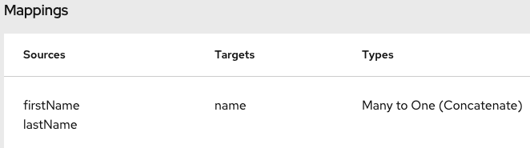.You can also preview mapping results in this view. Click
, select
Show Mapping Preview, and enter text as described in the previous step.
Preview fields appear for only the selected mapping. Click another
mapping in the table to view preview fields for it.
4.5. Separating one source field into multiple target fields
In a data mapping, you can separate a compound source field into multiple
target fields. For example, map the Name field to the FirstName and
LastName fields.
For the source field, you must know what type of content is in each part of this compound field, the order and index of each part of the content, and the separator between parts, such as a space or comma. See Example of missing or unwanted data when combining or separating fields.
-
In the Sources panel, click the field whose content you want to separate.
-
In the Target panel, click the first field that you want to separate the source field data into.
-
In the Target panel, for each additional target field that you want to contain some of the data from the source field, hover over the field and press CTRL-Mouse1 (CMD-Mouse1 on MacOS) to select it.
The data mapper automatically changes the field action to Separate.
When you are done selecting target fields, you should see lines from the source field to each of the target fields.
-
In the Mapping Details panel, in the Separator field, accept or select the character in the source field that indicates where to separate the source field values. The default is a space.
-
In the Mapping Details panel, under Targets, ensure that the target fields are in the same order as the corresponding content in the compound source field.
If necessary, drag and drop target fields to achieve the same order. The data mapper automatically updates the index numbers to reflect the new order.
-
If you mapped each part of the compound source field to a target field, then skip to the next step.
If the source field contains data that you do not need, then in the Mapping Details panel, edit the index of each target field so that it is the same as the index of the corresponding data in the compound source field. The data mapper automatically adds padding fields as needed to indicate unwanted data.
-
Optionally, preview the data mapping result:
-
In the upper right of the data mapper, click
and select
Show Mapping Preview to display a text input field on the source
field and read-only result fields on each target field. -
In the source field’s data input field, enter text. Be sure to enter the separator character between the parts of the field. Click outside the text box to display the mapping result in the read-only fields on the target fields.
If you reorder the target fields or add a transformation to a target field then the result fields on the target fields reflect this. If the data mapper detects any errors, it displays informative messages at the top of the Mapping Details panel.
-
Hide the preview fields by clicking
again and selecting
Show Mapping Preview.If you redisplay the preview fields, any data that you entered in them is still there and it remains there until you exit the data mapper.
-
-
To confirm that the mapping is correctly defined, click
to display defined mappings.
A mapping that separates the value of a source field into
multiple target fields looks like this:
 .
.You can also preview mapping results in this view. Click
, select
Show Mapping Preview, and enter text as described in the previous step.
Preview fields appear for only the selected mapping. Click another
mapping in the table to view preview fields for it.
4.6. Mapping between collections and non-collections
In the data mapper Source and Target panels:
-
indicates a collection. If the collection contains one primitive type, you can map directly from or to that collection. If the collection contains two or more different types, the data mapper displays the collection’s child fields and you can map to or from the collection’s fields.
-
indicates an expandable container that is a complex type. A complex type contains multiple fields of different types. A field in a complex type can be a type that is a collection, such as an array. You cannot map a complex type container itself. You can map only the fields that are in the complex type.
To toggle the display of data types, such as (COMPLEX),
STRING, INTEGER, in the upper right of the data mapper, click
and click
Show Types.
The following table shows the default behavior when mapping between collection fields and non-collection fields.
| When you map from this source | To this target | During execution |
|---|---|---|
A collection. (No child fields appear in the data mapper.) |
A field that is not in a collection. |
The data mapper maps the value that is in the last element in the source collection to the target field. |
A field that is in a collection. |
A field that is not in a collection. |
The data mapper maps the mapped field’s value that is in the last element in the source collection to the target field. |
A field that is not in a collection. |
A collection. (No child fields appear in the data mapper.) |
The data mapper maps the value that is in the mapped source field to the first (and only) element in the collection. |
A field that is not in a collection. |
A field that is in a collection. |
The data mapper maps the value that is in the mapped source field to the first (and only) element in the collection. |
When you map from a collection field to a non-collection field, the default behavior is that the target field gets its value from the last element in the source collection. You can change this default behavior in the following ways:
-
To map from the element that you choose, apply the Item At transformation to the source and specify an index. For example, to map the value that is in the first element that is in the collection, specify
0for the index. -
To map all values that are in all elements that are in a source collection, apply the Concatenate transformation to the source collection or source collection field and optionally specify a delimiter. The default delimiter is a space. For example, consider this source collection:
-
In the first element, the value in the city field is Boston.
-
In the second element, the value in the city field is Paris.
-
In the third element, the value in the city field is Tokyo.
During execution, the data mapper populates the target field with
Boston Paris Tokyo. -
When you map from a non-collection field to a collection field, the default behavior is that the target collection contains one element, which contains the non-collection, source field value. You can change the default behavior when the source field contains a series of values that are separated by the same delimiter. For example, consider a non-collection, source cities field that contains:
Boston Paris Tokyo
You would map this to a target collection or to a
target field that is in a collection.
On the source cities field, add the Split transformation.
During execution, the data mapper splits the value of the
cities field at the space delimiter. The result is a
collection that contains three elements. In the first
element, the value of the city field is Boston. In the
second element, the value of the city field is Paris.
In the third element, the value of the city field is Tokyo.
4.7. Transforming source or target data
In the data mapper, after you define a mapping, you can transform any field in the mapping. Transforming a data field defines how you want to store the data. For example, you could specify the Capitalize transformation to ensure that the first letter of a data value is uppercase.
-
Map the fields. This can be a one-to-one mapping, a combination mapping, or a separation mapping.
-
In the Mapping Details panel, under Sources or under Targets, in the box for the field that you want to transform, click the arrow to the left of the trash can icon.
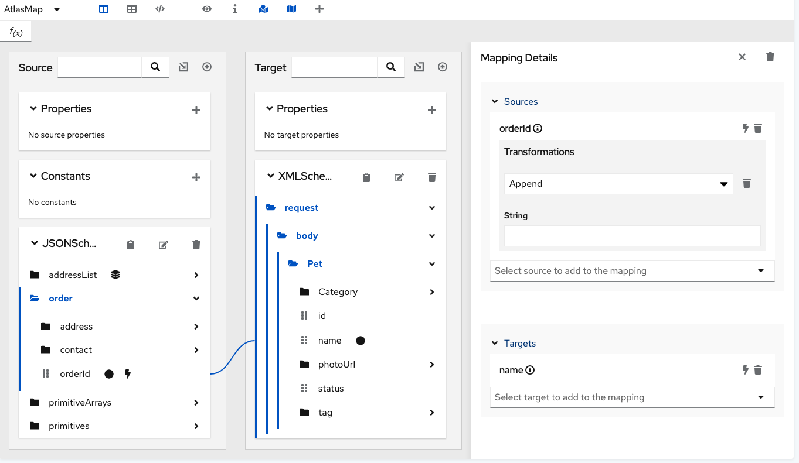
This displays a pull-down where you can select the transformation that you want the data mapper to perform. The set of available transformations is type specific.
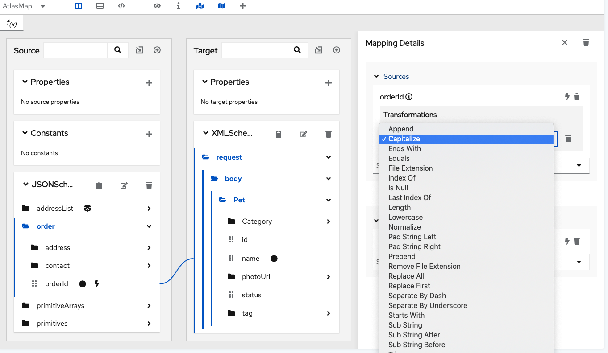
-
Click the transformation that you want to perform.
-
Optional. If the transformation requires any input parameters, specify them in the appropriate input fields.
-
Optional. To add another transformation, click the arrow to the left of the trash can icon again.
4.8. Applying conditions to mappings
In some integrations, it is helpful to add conditional
processing to a mapping. For example, suppose that you are
mapping a source zip code field to a target zip code field.
If the source zip code field is empty, you might want to fill
the target field with 99999. To do this, you would specify
an expression that tests the zip code source
field to determine if it is empty, and if it is empty,
inserts 99999 into the zip code target field.
The data mapper supports expressions that are similar to a Microsoft Excel expressions, but does not support all Microsoft Excel expression syntax.
You can define zero or one condition for each mapping.
The following procedure gets you started with applying conditions to mappings. As you work with mappings and conditions, you can perform the required steps in the order that is most convenient for you.
-
You are mapping fields in a the data mapper UI.
-
You are familiar with Microsoft Excel expressions or you have the conditional expression that you want to apply to a mapping.
-
If data types are not already visible, display them by clicking
and then
Show Types.While this is not a requirement for specifying a condition, it is helpful to see the data types.
-
Create the mapping that you want to apply a condition to, or ensure that the currently selected mapping is the mapping that you want to apply a condition to. For example, consider this mapping:
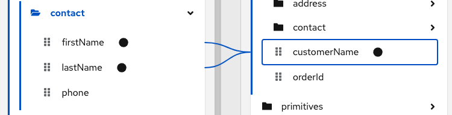
-
In the upper right, click
 to
display the conditional expression input field.
to
display the conditional expression input field.In the expression field, the data mapper automatically displays the names of the source fields in the current mapping. For example:
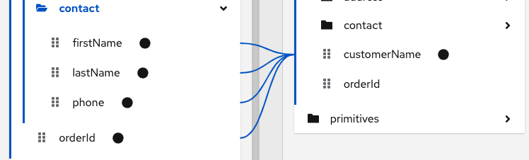
In the expression input field, the order of the source fields is the order in which you selected them when you created the mapping. This is important because the default mapping behavior is that the data mapper concatenates the field values in this order to insert the result in the target field. In this example, to create this mapping,
lastNamewas selected first and thenfirstNamewas selected. -
Edit the expression input field to specify the conditional expression that you want the data mapper to apply to the mapping. Details about supported conditional expressions follow this procedure.
As you specify the expression, you can:
-
Enter
@and start to enter the name of a field. The data mapper displays a list of the fields that match what you entered. Select the field that you want to specify in the expression. -
Drag a field from the mapping canvas into the expression input field.
When you add a field name to the expression, the data mapper adds that field to the mapping. For example, consider this conditional expression:

During execution, if the data mapper determines that the
lastNamefield is empty, it maps only thefirstNamefield to the targetcustomerNamefield. If thelastNamefield contains a value, that is, it is not empty, the data mapper concatenates the values in the sourceorderIdandphonefields, and inserts the result in thecustomerNamefield. (This example shows how the logic works, but it is probably not a useful example because when there is a value in thelastNamefield, you most likely want the data mapper to simply perform the mapping and not map some other value into the target.)For this example, after you complete entering the expression, the data mapping is:

In the conditional expression, if you remove a field name that is in the mapping that the expression applies to, the data mapper removes that field from the mapping. In other words, every field name in the mapping must be in the conditional expression.
-
-
If mapping preview fields are not already visible, display them by clicking
and then
Show Mapping Preview. -
Enter sample data in the source preview input field(s) to ensure that the target field or target fields get(s) the correct value.
-
Optionally, apply transformations to one or more source or target fields that are in the mapping:
-
In the Mapping Details panel, find the field that you want to apply a transformation to.
-
Just below it, click Add Transformation.
-
Click the transformation that you want the data mapper to perform.
-
If needed, specify input parameters.
For example, in the same mapping presented in this procedure, in the Mapping Details panel, you could apply the
Uppercasetransformation to thefirstNamefield. You can test this by entering data in thefirstNamefield’s preview input field. -
-
Edit the conditional expression as needed to obtain the desired result.
-
ISEMPTY(source-field-name1 [+ source-field-name2])The result of the
ISEMPTY()function is a Boolean value. Specify at least one argument, which is the name of a source field in the mapping that you want to apply the condition to. When the specified source field is empty, theISEMPTY()function returns true.Optionally, add the + (concatenation) operator with an additional field, for example:
ISEMPTY(lastName + firstName)This expression evaluates to true if both source fields,
lastNameandfirstName, are empty.Often, the
ISEMPTY()function is the first argument in anIF()function. -
IF(boolean-expression, then, else)When
boolean-expressionevaluates to true, the data mapper returnsthen. Whenboolean-expressionevaluates to false, the data mapper returnselse. All three arguments are required. The last argument can be null, which means that nothing is mapped whenboolean-expressionevaluates to false.For example, consider the mapping that combines the
lastNameandfirstNamesource fields in the targetcustomerNamefield. You can specify this conditional expression:IF (ISEMPTY(lastName), firstName, lastName + ‘,’ + firstName )During execution, the data mapper evaluates the
lastNamefield.-
If the
lastNamefield is empty, that is,ISEMPTY(lastName)returns true, the data mapper inserts only thefirstNamevalue into the targetcustomerNamefield. -
If the
lastNamefield contains a value, that is,ISEMPTY(lastName)returns false, the data mapper maps thelastNamevalue, followed by a comma, followed by thefirstNamevalue into the targetcustomerNamefield.Now consider the behavior if the third argument in this expression is null:
IF (ISEMPTY(lastName), firstName, null )During execution, the data mapper evaluates the
lastNamefield. -
As in the previous example, if the
lastNamefield is empty, that is,ISEMPTY(lastName)returns true, the data mapper inserts only thefirstNamevalue into the targetcustomerNamefield. -
However, when the third argument is null, if the
lastNamefield contains a value, that is,ISEMPTY(lastName)returns false, the data mapper does not map anything into the targetcustomerNamefield.
-
Operator |
Description |
|
Add numeric values or concatenate string values. |
|
Subtract a numeric value from another numeric value. |
|
Multiply numeric values. |
|
Divide numeric values. |
|
Return true if both the left and right operands are true. Each operand must return a Boolean value. |
|
Return true if the left operand is true, or if the right operand is true, or if both operands are true. Each operand must return a Boolean value. |
|
Not |
|
Return true if the left numeric operand is greater than the right numeric operand. |
< |
Return true if the left numeric operand is less than the right numeric operand. |
|
Return true if the left operand and the right operand are the same. |
4.9. Viewing mappings
While you are using the data mapper UI, you can view the mappings that are already defined. This lets you check whether the correct mappings are in place.
The data mapper canvas is visible.
-
In the upper right, click
to display a list of the
defined mappings. -
To dismiss the list of mappings and redisplay the source and target fields, click
again.
4.10. Descriptions of available transformations
| TODO Generate this list automatically from annotation - https://github.com/atlasmap/atlasmap/issues/173 |
The following table describes the available transformations. The date and
number types refer generically to any of the various forms of these
concepts. That is, number includes, for example, integer, long, double.
Date includes, for example, date, Time, ZonedDateTime.
| Transformation | Input Type | Output Type | Parameter (* = required) | Description |
|---|---|---|---|---|
|
number |
number |
None |
Return the absolute value of a number. |
|
date |
date |
|
Add days to a date. The default is 0 days. |
|
date |
date |
|
Add seconds to a date. The default is 0 seconds. |
|
string |
string |
string |
Append a string to the end of a string. The default is to append nothing. |
|
string |
string |
None |
Convert a phrase to a camelized string by removing whitespace, making the first word lowercase, and capitalizing the first letter of each subsequent word. |
|
string |
string |
None |
Capitalize the first character in a string. |
|
number |
number |
None |
Return the whole number ceiling of a number. |
|
any |
Boolean |
|
Return true if a field contains the specified value. |
|
number |
number |
|
Convert a number that represents an area to another unit. For
the |
|
number |
number |
|
Convert a number that represents a distance to another unit. For the
|
|
number |
number |
|
Convert a number that represents mass to another unit. For the
|
|
number |
number |
|
Convert a number that represents volume to another unit. For the
|
|
None |
date |
Note |
Return the current date. |
|
None |
date |
None |
Return the current date and time. |
|
None |
date |
None |
Return the current time. |
|
date |
number |
None |
Return the day of the week (1 through 7) that corresponds to the date. |
|
date |
number |
None |
Return the day of the year (1 through 366) that corresponds to the date. |
|
string |
Boolean |
|
Return true if a string ends with the specified |
|
any |
Boolean |
|
Return true if a field is equal to the specified |
|
string |
string |
None |
From a string that represents a file name, return the file extension without the dot. |
|
number |
number |
None |
Return the whole number floor of a number. |
|
any |
string |
|
In |
|
None |
string |
None |
Create a string that represents a random UUID. |
|
string |
number |
|
In a string, starting at 0, return the first index of the specified
|
|
any |
Boolean |
None |
Return true if a field is null. |
|
string |
number |
|
In a string, starting at 0, return the last index of the specified
|
|
any |
number |
None |
Return the length of the field, or |
|
string |
string |
None |
Convert a string to lowercase. |
|
string |
string |
None |
Replace consecutive whitespace characters with a single space and trim leading and trailing whitespace from a string. |
|
string |
string |
|
Insert the character supplied in |
|
string |
string |
|
Insert the character supplied in |
|
string |
string |
|
Prefix |
|
string |
string |
|
In a string, replace all occurrences of the supplied matching string with the
supplied |
|
string |
string |
|
In a string, replace the first occurrence of the specified |
|
number |
number |
None |
Return the rounded whole number of a number. |
|
string |
string |
None |
Replace each occurrence of whitespace, colon (:), underscore (_), plus (+), and equals (=) with a hyphen (-). |
|
string |
string |
None |
Replace each occurrence of whitespace, colon (:), hyphen (-), plus (+), and equals (=) with an underscore (_). |
|
string |
Boolean |
|
Return true if a string starts with the specified string (including case). |
|
string |
string |
|
Retrieve a segment of a string from the specified inclusive |
|
string |
string |
|
Retrieve the segment of a string after the specified |
|
string |
string |
|
Retrieve a segment of a string before the supplied |
|
string |
string |
None |
Trim leading and trailing whitespace from a string. |
|
string |
string |
None |
Trim leading whitespace from a string. |
|
string |
string |
None |
Trim trailing whitespace from a string. |
|
string |
string |
None |
Convert a string to uppercase. |
4.11. Creating a custom transformation
In addition to the built-in transformations, you can define custom field action transformations. Write custom field actions in Java and then import them into the AtlasMap data mapper. After it is established in a source or target panel, the transformation appears in the list of transformations that are available for any field.
-
Define a transformation in Java.
The following custom transformation is applicable to
Stringarguments. It takes the argument specified in the source panel transformation and prints it on the target side. Implement theAtlasFieldActionclass as follows:package io.atlasmap.service.my; import io.atlasmap.v2.*; import io.atlasmap.api.AtlasFieldAction; import io.atlasmap.spi.AtlasFieldActionInfo; public class PaulsFieldActions implements AtlasFieldAction { @AtlasFieldActionInfo(name = "MyCustomFieldActionPaul", sourceType = FieldType.STRING, targetType = FieldType.STRING, sourceCollectionType = CollectionType.NONE, targetCollectionType = CollectionType.NONE) public static String myCustomFieldAction(String input) { return "Paul's custom field action: " + input; } } -
Build your Java archive file.
The
io.atlasmap.v2,io.atlasmap.apiandio.atlasmap.spitarget dependencies are most easily resolved through the use of a mavenpom.xmlfile. Use the same version number as the AtlasMap standalone JAR file that you previously downloaded. -
At the top of the AtlasMap main tool bar, click
to import your Java archive file.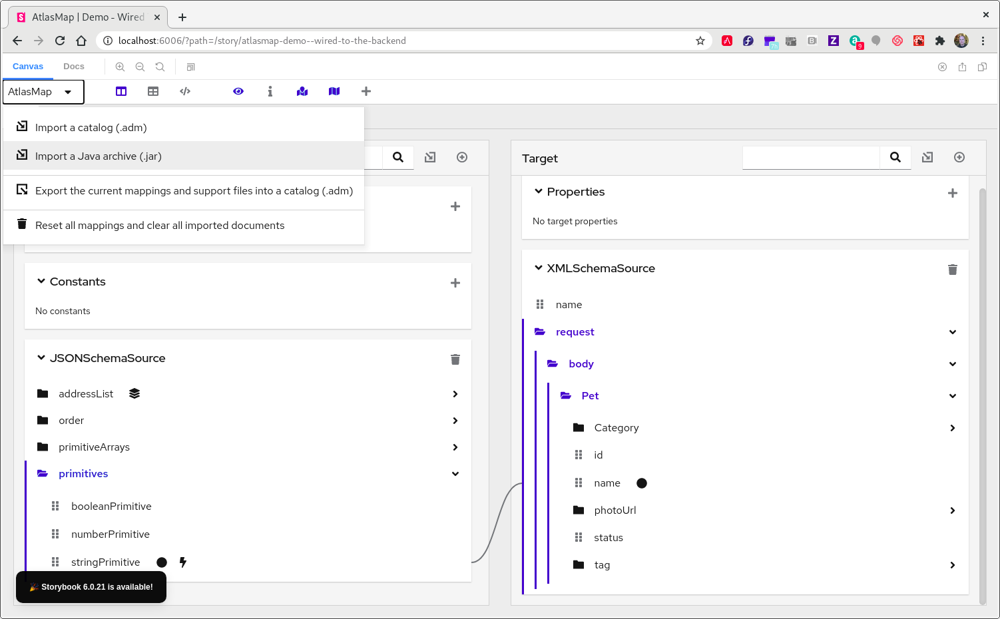
-
Navigate to the JAR file that contains your custom transformation and select it.
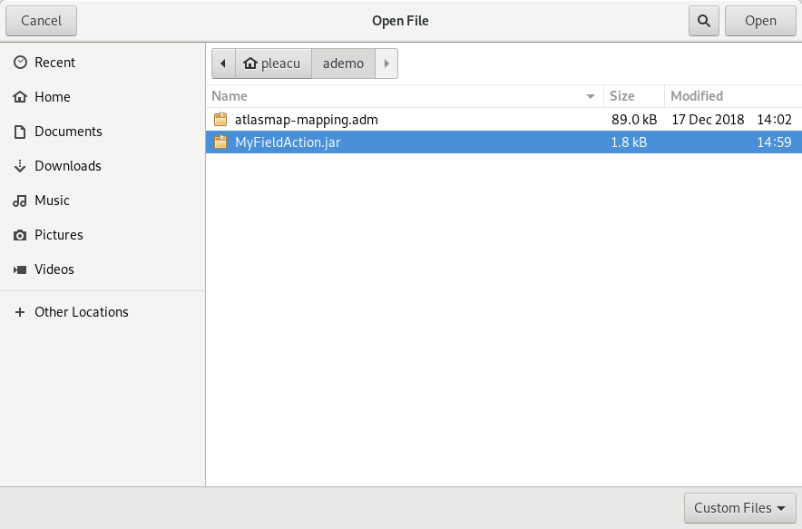
-
To enable the class that defines the custom transformation, for this example, at the top of the Target panel, select the plus icon (+).
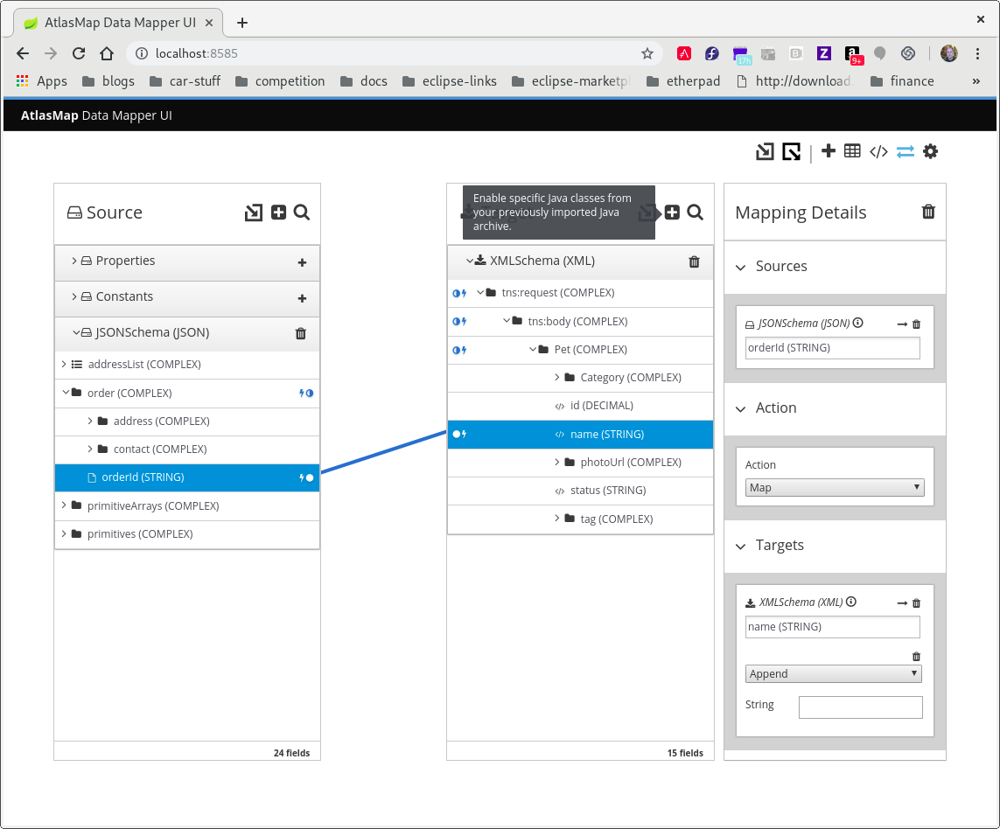
-
In the Class package name: field, enter the class package name of the Java class that defines the custom transformation. In the
MyFieldAction.jarexample, the class package name isio.atlasmap.service.my.PaulsFieldActions.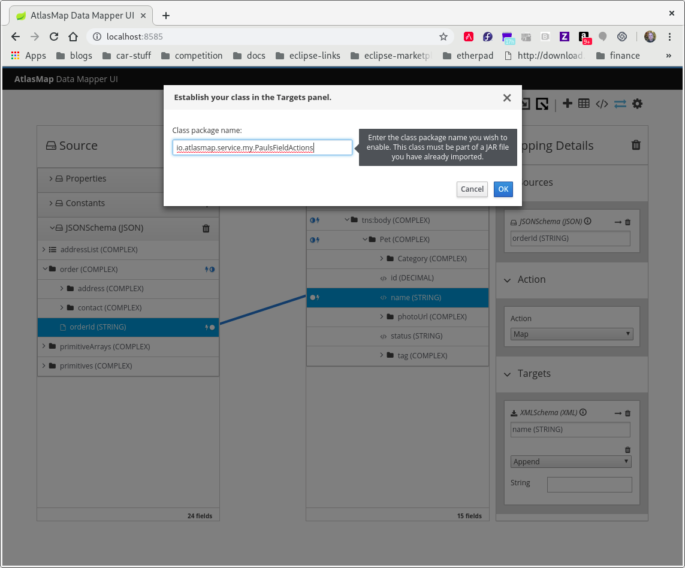
-
In the Mapping Details panel, in the Targets section, select the transformation pull-down menu to see that your custom transformation now appears as a selectable transformation. Select it.
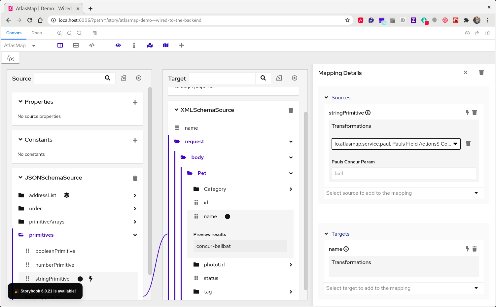
-
To test your custom transformation:
-
In the AtlasMap main tool bar, click
. -
Click Show Mapping Preview.
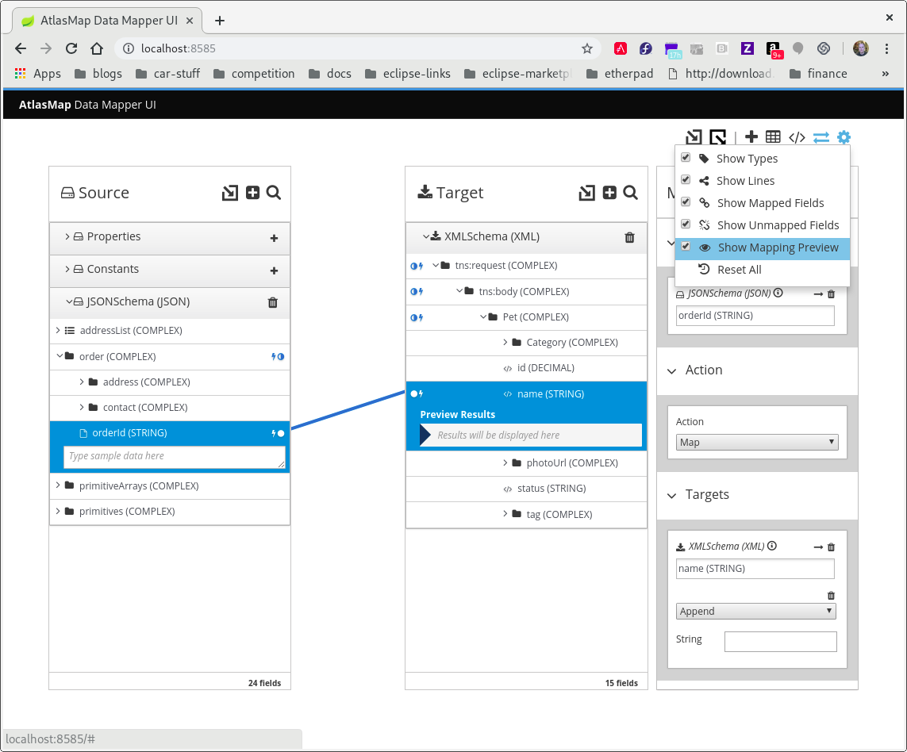
-
In the Source panel input field, type a string, for example,
test. -
Notice the same string in the Preview Results field in the target panel.
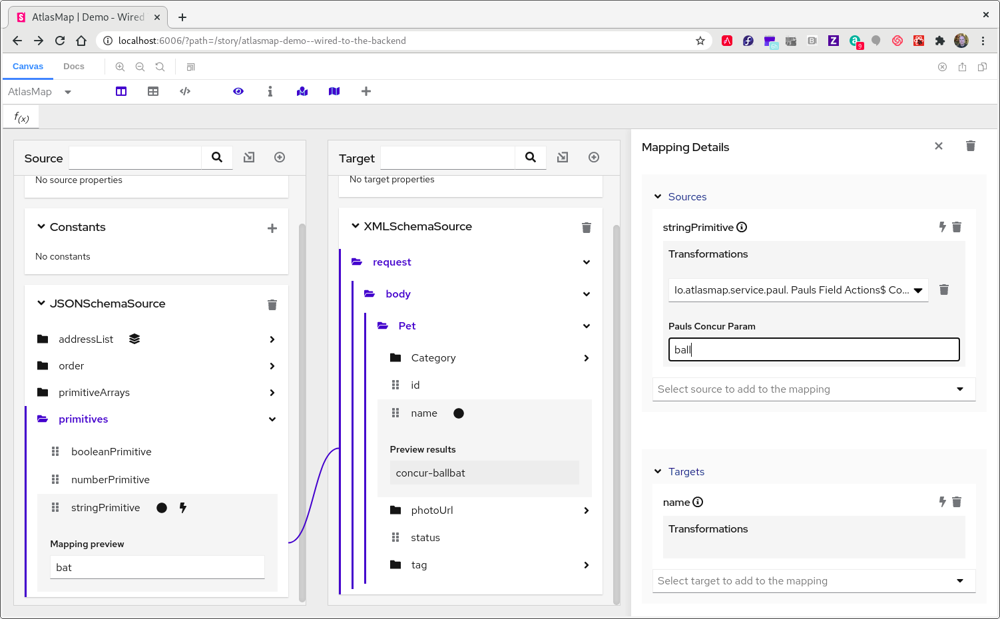
-
5. Exporting mappings to an AtlasMap catalog file
After all mappings are defined, save the mappings by exporting
them to an AtlasMap .adm catalog file:
-
In the AtlasMap top tool bar, click .
This captures your workspace in a
.admcatalog file. -
In the Export mappings field, accept the default name or enter a name for the exported
.admfile. The default name isatlasmap-mapping.adm. -
Click OK.
AtlasMap places the exported file in the Downloads directory.
To set AtlasMap to the state at which you exported data mappings,
import a .adm catalog file by clicking
in the AtlasMap top tool bar. Navigate to the .adm file
and click Open.
|
6. Resetting data files in AtlasMap
Initially, AtlasMap displays a blank canvas. You must import at least one data file into the Source panel and at least one data file into the Target panel. You can then map fields.
After you import a data file, you can remove it from the data mapper canvas by clicking the trash icon, as in the following image:
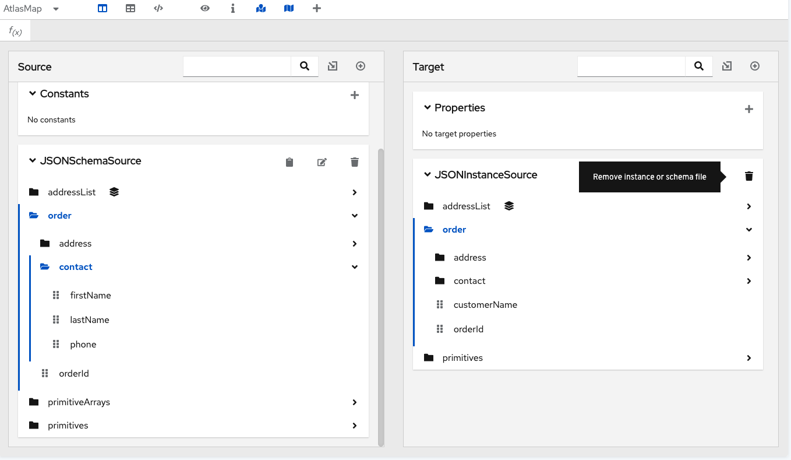
To remove all imported files, as well as all data mappings:
-
In the AtlasMap top menu bar, click
. -
In the popup menu, click Reset All.
-
In the confirmation dialog, click Reset.
AtlasMap displays a blank canvas.
7. Running AtlasMap with Apache Camel
Developers who are familiar with Apache Camel can implement a
Camel application that uses the camel-atlasmap component.
A camel-atlasmap endpoint
-
Can consume an AtlasMap
.admfile -
Uses the content of
bodyas the default source document for mappings
For example:
from("direct:start")
.to("atlas:atlas-mapping.adm")
.log("${body}")
If body contains a java.util.Map object, then camel-atlasmap
uses key as a document ID and the corresponding value as the
document payload.
You can obtain the camel-atlasmap component here:
http://central.maven.org/maven2/io/atlasmap/camel-atlasmap/1.42.3/camel-atlasmap-1.42.3.jar